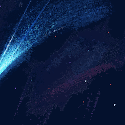
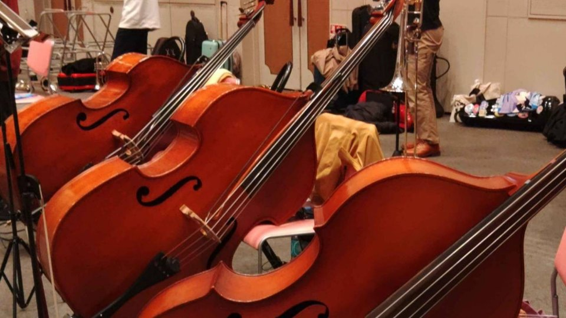
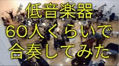
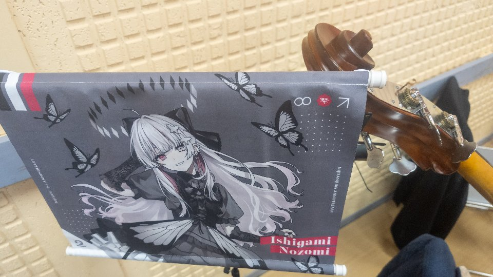
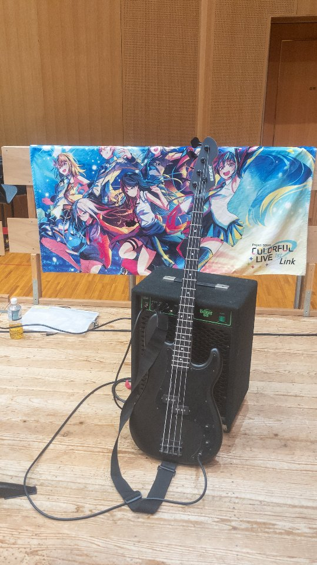

学生です。@forget1900 の音楽界隈用アカウントでもあります。
オーケストラ、たまに吹奏楽の企画型楽団にいます。
2025/08/09 ドヴォルジャーク交響曲第8番(イギリス)
2026/01/11 チャイコフスキー作曲 1812年
03/28 第六の幸福をもたらす宿・中国の不思議な役人
08/23 マードックからの最後の手紙(2021年版)・斐伊川に流るるクシナダ姫の涙(中編成版)
09/22 ホルスト惑星より「木星」「天王星」

・イギリス
・交響三章(芥川也寸志)
・フィンランディア
・カリンニコフ交響曲第1番
・チャイコフスキー交響曲第4番
・アルルの女（第一・第二組曲）
・スラブ組曲第8番
・アイネクライネナハトムジーク etc...
弾きたい曲
・新世界より
・革命 etc...

1812は通常編成でも弾きたいな！！にじさんじ
箱推しです。時間なくて追えないので、切り抜きメインで楽しんでいます。
委員長とでろーんさんから入り始めて、最近は、石神のぞみをよく見ています。
また、「にじそうさく」は10からスタッフとしても参加しています。

ぼかぶら
名古屋会場にてエレキベースで参加しました！！

© 2026 めうだお